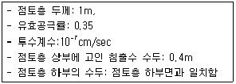
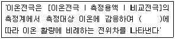

폐기물처리기사 (2005-03-06 기출문제)
1과목: 폐기물 개론
1. 밀도가 0.45t/m3인 폐기물을 매립하기 위해 밀도를 0.85t/m3 으로 압축하였다면 압축비는?
- 1.89
- 2.27
- 2.84
- 3.28
(정답률: 알수없음)

2. 쓰레기 조사에서 전수조사의 장점과 관계없는 내용은?
- 표본오차가 적다.
- 보정이 가능하다.
- 조사기간이 짧다.
- 이용도가 높다.
(정답률: 알수없음)
3. 투입량이 1ton/hr이고 회수량이 600kg/hr(그 중 회수대상물질은 500kg/hr)이며 제거량은 400kg/hr(그 중 회수대상물질은 100kg/hr)일 때 회수율(%)은? (단, Rietema식 적용)
- 58
- 68
- 72
- 76
(정답률: 알수없음)
4. 하수처리장에서 발생되는 슬러지와 비교하여 분뇨의 특성이 아닌 것은?
- 질소의 농도가 높음
- 다량의 유기물을 포함
- 염분농도가 높음
- 고액분리가 쉬움
(정답률: 알수없음)
5. 다음 중 폐기물의 관거(pipeline)를 이용한 수거 방식에 관한 설명으로 옳지 않은 것은?
- 자동화, 무공해화가 가능하다.
- 잘못 투입된 폐기물도 즉시 회수할 수가 있다.
- 가설후에 경로변경이 곤란하고 설치비가 높다.
- 장거리 수송이 곤란하다.
(정답률: 알수없음)
6. 폐기물의 함수율은 25%이고, 건조기준으로 원소성분 및 열량계를 이용한 열량은 다음과 같다. 폐기물의 저위 발열량은? (단, 화학적 조성분석치- 수소: 18%, 고위발열량: 2800Kcal/kg)
- 1802kcal/kg
- 1678kcal/kg
- 1523kcal/kg
- 1324kcal/kg
(정답률: 알수없음)
7. 어느 쓰레기의 입도분석결과 입도 누적곡선상의 10%, 30%, 60%, 80%의 입경이 각각 0.5mm, 1.0mm, 1.5mm, 2.0mm이었다면 균등계수(Uc)는?
- 0.5
- 2.0
- 3.0
- 4.0
(정답률: 알수없음)
8. 다음 유해폐기물의 처리기술 중 미생물로 분해되기 어려운 물질이나 활성탄을 이용하기에는 농도가 너무 높은 물질등에 대하여 적합한 방법은?
- 증류방법
- 화학침전방법
- 용매추출방법
- 화학적환원방법
(정답률: 알수없음)
9. 다음 중 효과적인 수거노선 설정에 있어서 바람직하지 못한 것은?
- 적은 양의 쓰레기가 발생하나 동일한 수거빈도를 받기를 원하는 수거지점은 가능한 한 같은 날 왕복 내에서 수거하도록 한다.
- 가능한 한 지형지물 및 도로 경계와 같은 장벽을 이용하여 간선도로 부근에서 시작하고 끝나도록 배치하여야 한다.
- U자형 회전은 피하고 많은 양의 쓰레기가 발생되는 발생원은 하루 중 가장 나중에 수거하도록 한다.
- 가능한 한 시계방향으로 수거노선을 정한다.
(정답률: 알수없음)
10. 어느 동에서 1주일 동안 쓰레기 수거현황을 조사한 결과 다음과 같았다. 쓰레기 발생량 (㎏/cap·day)는?
- 0.75
- 1.25
- 1.71
- 2.14
(정답률: 알수없음)
11. 정해진 수거일에 맞추어 쓰레기 저장용기를 주인이 길가에 갖다 놓으면 수거차량이 용기를 비우고 빈 용기는 주인이 찾아가는 쓰레기 수거 형태는?
- alley service
- curb service
- set out service
- set out - set back service
(정답률: 알수없음)
12. 청소상태의 평가법 중 서비스를 받는 사람들의 만족도를 설문조사하여 계산되는 지수의 약자로 맞는 것은?
- USI
- CEI
- SEI
- ESI
(정답률: 알수없음)
13. 다음 중 적환장 선정시 고려해야 되는 사항과 거리가 먼것은?
- 환경피해 영향이 최소인 곳
- 가급적 폐기물 발생지의 중심부에 위치할 것
- 가급적 간선도로에서 거리가 가깝지 않을 것
- 작업이 용이하고 설치가 간편할 것
(정답률: 알수없음)
14. 어떤시에서 발생되는 쓰레기의 성분 중 비가연성이 약 72.7%(중량비)를 차지하는 것으로 조사되었다. 지금 밀도 600kg/m3인 쓰레기 5m3 가 있을 때 가연성물질의 양(t )은? (단, 쓰레기는 가연성+비가연성)
- 0.82t
- 1.23t
- 1.44t
- 2.17t
(정답률: 알수없음)
15. 전과정평가(LCA)의 일반적 목적과 가장 거리가 먼 것은?
- 복수 제품간의 환경오염부하의 비교
- 환경목표치 또는 기준치에 대한 달성도 평가
- 환경분담비용의 적절성과 효율성에 대한 평가
- 생활양식의 평가와 개선목표의 도출
(정답률: 알수없음)
16. 돌, 코크스 등의 불투명한 것과 유리같은 투명한 것의 분리에 이용되는 방식인 광학선별에 관한 설명으로 틀린것은?
- 입자는 기계적으로 투입된다.
- 선별입자는 와전류형성으로 제거된다.
- 광학적으로 조사된다.
- 조사결과는 전기전자적으로 평가된다.
(정답률: 알수없음)
17. 고형물 함량이 38%인 500kg의 슬러지 케익을 건조상에서 건조시켜 함수율 44%의 케익으로 만들었을 때 감소된 무게는? (단, 슬러지 비중은 1.0)
- 160.7kg
- 170.6kg
- 180.3kg
- 190.5kg
(정답률: 알수없음)
18. 다음 기질(Substrate)중 혐기성 처리를 할 경우 슬러지 생산량이 가장 적게 생성되는 기질은? (단, SRT, 온도 조건 등은 모두 동일하다.)
- Glucose
- Glutamic acid
- Amino acid
- Fatty acid
(정답률: 알수없음)
19. 폐기물파쇄기 중 전단파쇄기에 관한 설명으로 틀린 것은?
- 고정칼, 왕복 또는 회전칼과의 교합에 의하여 폐기물을 전단한다.
- 충격파쇄기에 비해 파쇄속도가 느리다.
- 충격파쇄기에 비해 파쇄물의 크기를 고르게 할 수 있다.
- 충격파쇄기에 비해 이물질 혼입에 강하다.
(정답률: 알수없음)
20. 쓰레기 배출량을 추정하는 방법으로 시간만 고려하는 방법과 시간을 단순히 하나의 독립적인 종속인자로 고려하는 방법의 문제점을 보완할 수 있도록 고안된 것은?
- 시간상관모델
- 다중회귀모델
- 동적모사모델
- 경향법
(정답률: 알수없음)
2과목: 폐기물 처리 기술
21. 차단형 매립지에서 차수 설비에 쓰이는 재료중 투수율이 상대적으로 높고 불투수층을 균일하게 시공하기 쉽지않는 단점이 있는 반면에 침출수중의 오염물질 흡착능력이 우수한 장점이 있는 것은?
- CSPE
- Soil Mixture
- HDPE
- Clay Soil
(정답률: 알수없음)
22. 고형물농도 60g/L인 슬러지를 하루에 10m3 탈수시키고자 한다. 엽상 여과시험에 의하면 소석회를 슬러지 중의 고형물에 대하여 30% 첨가한 때에 겉보기 여과속도는 10㎏ /m2ㆍhr이며 케익의 함수율은 80%이었다. 시험과 같이 조작한다면 슬러지를 탈수하는데 필요한 최소진공여과기 면적은? (단, 탈수기는 8시간/일 가동)
- 약 9.8m2
- 약 11.2m2
- 약 13.3m2
- 약 15.4m2
(정답률: 알수없음)
23. 거시적 경제성 평가를 통하여 폐기물관리체계를 최적화 할수 있는 컴퓨터 모델은?
- WRAP모델
- WARP모델
- WREP모델
- WERP모델
(정답률: 알수없음)
24. 표면차수막과 비교한 연직차수막에 관한 설명으로 옳지 않은 것은?
- 수평방향의 차수층 존재시에 사용한다.
- 지하수 집배수시설은 불필요하다.
- 지하매설로서 차수성 확인이 어렵다.
- 단위면적당 공사비는 싸지만 총공사비가 비싸다.
(정답률: 알수없음)
25. 어느 수역에 유출된 유해물질이 초기 농도의 절반이 될 때까지 소요되는 시간은? (단, 유해물질의 1차 감소 속도상수는 0.069/hr 이다.)
- 약 5시간
- 약 10시간
- 약 15시간
- 약 20시간
(정답률: 알수없음)
26. 고화처리 방법 중 유기중합체법의 단점이라 볼 수 없는 것은?
- 고형성분만이 처리가능하다.
- 고화처리된 폐기물은 처분시 2차용기에 넣어 매립해야 한다.
- 혼합율이 비교적 높고 에너지 요구량이 크다.
- 중합에 사용되는 어떤 촉매는 상당한 부식성이 있어 특별한 혼합장치와 용기 라이너가 필요하다.
(정답률: 알수없음)
27. 일반적으로 도시폐기물을 매립한지 1년후에 발생되는 침출수 성분과 2년후에 발생되는 침출수 성분을 비교한 내용으로 알맞지 않는 것은?
- TS농도는 2년후에 발생되는 침출수내의 농도가 1년후에 발생되는 침출수내의 농도보다 낮아진다.
- 총경도농도는 2년후에 발생되는 침출수내의 농도가 1년후에 발생되는 침출수내의 농도보다 높아진다.
- pH는 2년후 발생되는 침출수가 1년후에 발생되는 침출수보다 높아진다.
- 화학적산소요구량농도는 2년후 발생되는 침출수내의 농도가 1년후에 발생되는 침출수내의 농도보다 낮아진다.
(정답률: 알수없음)
28. 생활폐기물 매립지가 정상상태에 도달했을 때 발생하는 가스중에 그 농도가 가장 낮은 것은?
- 메탄
- 황화수소
- 질소
- 탄산가스
(정답률: 알수없음)
29. 퇴비화 중요 영향인자인 C/N비에 관한 설명으로 잘못된 것은?
- C(탄소)는 퇴비화 미생물의 에너지원이며, N(질소)는 미생물체를 구성하는 인자이다.
- C/N비가 80이상이면 질소결핍 현상이 일어나 퇴비화 반응이 느려진다.
- 퇴비화의 최적 C/N비는 25∼40정도이며, Bulkingagent(톱밥기준) C/N비는 150∼1000 정도이다.
- 가축분뇨의 C/N비는 150∼250으로 높은 편이다.
(정답률: 알수없음)
30. 고화처리된 폐기물내 유용한 폐기물 성분을 회수하여 다시 쓸 수도 있는 고화처리 방법은?
- 피막 형성법(Surface Encapsulation Process)
- 자가 시멘트법(Self-Cementing Process)
- 열가소성 플라스틱법(Thermoplastic Process)
- 유리화법(Glassification or Vetrification Process)
(정답률: 알수없음)
31. 슬러지 개량(Conditioning)에 대한 설명으로 옳지 않은 것은?
- 농축슬러지나 소화슬러지는 여러 유기물과 형상이 다양한 미세 고형물 및 콜로이드로 구성되어 물과 강한 친화력으로 탈수가 쉽지 않으므로 슬러지를 개량한다.
- 진공여과기로 슬러지 탈수시, 슬러지 개량에 투입하는 응집제는 유기계통의 응집제를 사용한다.
- 슬러지액을 밀폐된 상황에서 150~200℃의 온도로 반시간~한시간 정도 처리함으로서 슬러지속의 콜로이드와 겔구조를 파괴하여 탈수성을 개량한다.
- 수세로 슬러지를 개량하는 방법은 혐기성 소화된 슬러지가 주대상이 된다.
(정답률: 알수없음)
32. 고형화처리방법중 가장 흔히 사용되는 시멘트기초법의 장점에 해당하지 않는 것은?
- 원료가 풍부하고 값이 싸다.
- 다양한 폐기물을 처리할 수 있다.
- 폐기물의 건조나 탈수가 필요하지 않다.
- 낮은 pH에서도 폐기물 성분의 용출가능성이 없다.
(정답률: 알수없음)
33. COD/TOC < 2.0, BOD/COD < 0.1, COD는500mg/L 미만인 매립 연한 10년 이상된 곳에서 발생된 침출수의 처리공정의 효율성을 틀리게 나타낸 것은?
- 역삼투 - 양호
- 이온교환수지 - 보통
- 활성탄 - 양호
- 화학적침전(석회투여) - 양호
(정답률: 알수없음)
34. 유기성폐기물의 퇴비화과정중 고온단계에서 주된 역할을 담당하는 미생물은?
- 전반기: Pseudomonas, 후반기: Bacillus
- 전반기: Thermoactinomyces 후반기: Enterbacter
- 전반기: Enterbacter, 후반기: Pseudomonas
- 전반기: Bacillus, 후반기: Thermoactinomyces
(정답률: 알수없음)
35. 토양자체내 광물질의 영향에 관한 내용으로 틀린 것은?
- SiO2는 거의 불용성이며 작물에 해를 주지 않는다.
- Al은 pH가 5.5이상인 경우 작물에 독성이 있다.
- Mn은 알카리성에서 MnO2 불용성으로 나타난다.
- Ba는 쥐나 사람에 유독하나 작물자체내로는 그다지 흡수되지 않는다.
(정답률: 알수없음)
36. 다음 조건의 관리형 매립지에서 침출수의 통과 년수는?

- 약 4년
- 약 6년
- 약 8년
- 약 10년
(정답률: 알수없음)
37. 매일 평균 100t의 쓰레기를 배출하는 도시가 있다. 매립지의 평균 매립 두께를 5m, 매립밀도를 0.8t/m3로 가정할 때 향후 5년간(1년은 360일 가정)의 쓰레기 매립을 위한 최소 매립지 면적은? (단, 복토,침하,진입로,기타시설 등은 고려치 않는다)
- 28,800m2
- 36,000m2
- 45,000m2
- 51,000m2
(정답률: 알수없음)
38. 매립지의 표면 총면적은 35㎞2이고 년간 평균 강수량이 2200mm가 될 때 그 매립지의 유출률이 0.5이었다고 한다. 이 때 침출수의 일 평균처리 계획수량으로 가장 적절한 것은?(단, 강우강도 대신에 평균강수량으로 계산하시오.)
- 약 85500m3/day
- 약 95500m3/day
- 약 1⑤500m3/day
- 약 115500m3/day
(정답률: 알수없음)
39. 토양세척시 오염물질의 제거과정에 대한 설명으로 옳지 않은 것은?(단, 기술내용은 (오염물질의 결합형태 - 탈착 원리 -분리된 오염물질)의 순이다.)
- 굵은 입자표면의 오염 - 충돌력 - 분산 형태
- 가는 입자표면의 오염 - 마찰력 - 분산 형태
- 화학 결합 - 전단력 - 현탁 형태
- 오일 필름 - 탈착력 - 유화 형태
(정답률: 알수없음)
40. 함수율이 90%인 슬러지의 겉보기 비중이 1.02이었다. 이 슬러지를 진공여과기로 탈수하여 함수율이 60%인 슬러지를 얻었다면 이 슬러지가 갖는 겉보기 비중은? (단, 물의 비중은 1.0으로 한다)
- 1.04
- 1.06
- 1.08
- 1.10
(정답률: 알수없음)
3과목: 폐기물 소각 및 열회수
41. 어떤 폐기물의 원소조성이 다음과 같을 때 이론공기량은? (단, 가연분:80%(C=45%, H=10%, O=40%, S=5%),수분=10%, 회분=10%)
- 2.1Sm3/kg
- 3.3Sm3/kg
- 4.4Sm3/kg
- 5.5Sm3/kg
(정답률: 알수없음)
42. 유동상 소각로의 장점이 아닌 것은?
- 가스의 온도가 낮고 과잉공기량이 적다.
- 유동 매체 열용량이 매우 커 액상물, 다습물, 고형물 등의 다종 혼소가 가능하다.
- 반응시간이 빨라 소각시간이 짧다.
- 상(床)으로 부터 찌꺼기 분리가 용이하다.
(정답률: 알수없음)
43. 소각 연소과정에서 발생하는 다이옥신류를 연소가스 처리시설에서 저감시키고자 한다. 다이옥신류 저감를 위한 최적의 연소가스 처리시설 조합 구성은?
- 전기집진기와 습식세정집진기의 조합
- SDA(Spray Dryer Absoption), 활성탄 주입설비, 여과 집진기의 조합
- SDA(Spray Dryer Absoption), 여과집진기, 습식세정기의 조합
- SDA(Spray Dryer Absoption), 전기집진기의 조합
(정답률: 알수없음)
44. 폐기물 연소후 배출되는 배기가스의 염화수소 농도가 482ppm이고, 배기가스 부피가 5,811Sm3/hr 일 때 배기가스내 염화수소를 Ca(OH)2로 처리시 필요한 Ca(OH)2량은? (단, Ca원자량:40, 반응율은 100%로 한다.)
- 4.1kg/hr
- 4.3kg/hr
- 4.6kg/hr
- 4.9kg/hr
(정답률: 알수없음)
45. 반응속도가 빠르기 때문에 폐기물의 수분함량이 변화해도 큰 무리 없이 운전될 수 있는 장점이 있으나 열손실이 크고 운전이 까다로운 열분해 장치로 가장 적절한 것은?
- 유동상 열분해장치
- 부유상 열분해장치
- 다단상 열분해장치
- 회전상 열분해장치
(정답률: 알수없음)
46. 굴뚝에 설치되며 보일러 전열면을 통하여 연소가스의 여열로 보일러 급수를 예열함으로서 보일러효율을 높이는 열교환 장치는?
- 공기 예열기
- 이코노마이저
- 과열기
- 재열기
(정답률: 알수없음)
47. 소각과정에서 발생하는 연소가스 냉각방식의 종류와 가장 거리가 먼 것은?
- 접촉 공냉식
- 폐열보일러식
- 집열 방사식
- 수 분사식
(정답률: 알수없음)
48. 고위발열량이 17,000kcal/Sm3인 에탄(C2H6)을 연소시킬 때 이론 연소온도(℃)는? (단, 이론 연소가스량 42m3/Sm3이며, 연소가스의 정압비열은 0.63kcal/Sm3·℃, 기준온도는 15℃, 공기는 예열하지 않으며, 연소가스는 해리되지 않음)
- 588
- 603
- 632
- 660
(정답률: 알수없음)
49. 다음의 집진장치 중 압력손실이 가장 큰 것은?
- 벤튜리 스크러버(Venturi Scrubber)
- 사이클론 스크러버(Cyclone Scrubber)
- 임펄스 스크러버(Impulse Scrubber)
- 테이슨 워셔(Theisen Washer)
(정답률: 알수없음)
50. 연료중의 산소가 결합수의 상태로 있기 때문에 전수소에서 연소에 이용되지 않는 수소분을 공제한 수소를 무엇이라 하는가?
- 결합수소
- 고립수소
- 유효수소
- 자유수소
(정답률: 알수없음)
51. 운전문제와 시설비를 고려할 때 일반적인 소각시설의 연소실 최소 규모는 60ton/day이다. 화격자(grate)의 폐기물 부하율을 300kg/m2·hr로 설계시 최소한의 화격자 면적은 몇 m2인가?
- 5.2
- 8.3
- 10.4
- 13.6
(정답률: 알수없음)
52. 고체연료의 연소형태로 적당하지 않은 것은?
- 증발연소
- 분해연소
- 등심연소
- 그을음연소
(정답률: 알수없음)
53. 연소가스의 체류시간은 연소실내부온도가 850℃ 이상으로 유지되는 상태에서 폐기물소각량에 따라 달라진다. 다음중 잘못된 것은?
- 200kg/일 이하 : 0.5초 이상
- 200kg/일 - 100kg/hr : 1초 이상
- 100kg/hr 이상 : 2초 이상
- 200kg/일 이상 : 2초 이상
(정답률: 알수없음)
54. 프로판(C3H8)과 부탄(C4H10)이 60%∶40%의 용적비로 혼합된 기체 1Nm3이 완전연소될 때의 CO2 발생량(Nm3)은?
- 1.2Nm3
- 2.3Nm3
- 3.4Nm3
- 4.5Nm3
(정답률: 알수없음)
55. 화격자의 부하량과 발열량이 맞게 짝지어진 것은?
- 120∼240kg/m2·hr, 1.2∼2.4×104kJ/m2·hr
- 120∼240kg/m2·hr, 2.8∼3.4×104kJ/m2·hr
- 240∼340kg/m2·hr, 2.8∼3.4×106kJ/m2·hr
- 340∼440kg/m2·hr, 2.8∼3.4×106kJ/m2·hr
(정답률: 알수없음)
56. NO 400ppm을 함유한 연소가스 300,000 Sm3/hr을 암모니아를 환원제로 하는 선택접촉환원법으로 처리하고자 한다. NH3의 반응율을 91%로 할 때 필요한 NH3양(kg/hr)은? [ 4NO + 4NH3 + O2 → 4N2 + 6H2O ] (단, 기타조건은 고려하지 않음)
- 70
- 80
- 90
- 100
(정답률: 알수없음)
57. 석탄의 탄화도가 증가하면 증가하는 것이 아닌 것은?
- 고정탄소
- 착화온도
- 매연발생률
- 발열량
(정답률: 알수없음)
58. 다음은 쓰레기 소각로에서 다이옥신류의 배출 경로를 설명한 것이다. 옳지 않은 것은?
- 폐기물중에 존재하는 다이옥신류가 분해하지 않고 배출
- 로내 온도 1200~1300℃ 범위에서 염소공여체가 두개의 벤젠고리와 결합하여 생성 배출
- 저온에서 촉매화반응에 의해 분진과 결합하여 배출
- 소각과정에서 유기물에 염소공여체가 반응하여 생성 배출
(정답률: 알수없음)
59. 액화 프로판(LPG) 500kg 용량의 용기를 기화시켜 5Nm3/hr로 연소시킨다면 실제 사용시간(hr)은? (단, 프로판의 분자식은 C3H8이며 전량 기화됨)
- 51
- 71
- 91
- 101
(정답률: 알수없음)
60. 어느 폐기물을 원소분석하여 C, H, O, N, S의 함량을 산정 하였다. 이 중 열량을 갖는 성분이 아닌 것은?
- 탄소 (C)
- 수소 (H)
- 질소 (N)
- 황 (S)
(정답률: 알수없음)
4과목: 폐기물 공정시험기준(방법)
61. 가스크로마토그래피법에서 유기질소 화합물 및 유기인 화합물을 선택적으로 검출할 수 있는 검출기는?
- 불꽃열이온 검출기
- 전자포획형 검출기
- 수소염이온화 검출기
- 열전도도 검출기
(정답률: 알수없음)
62. 용출시험법중 시료액의 조제에 관한 설명으로 옳은 것은?
- 용매의 pH는 5.3 ~ 6.8으로 조절한다.
- 시료와 용매의 비율은 1:20(W/V)으로 한다.
- 시료와 용매를 2000㎖ 삼각플라스크에 넣어 혼합한다
- 용매의 pH를 조절하기 위해 황산을 사용한다.
(정답률: 알수없음)
63. 시료의 전처리 방법에 관한 설명으로 옳지 않은 것은?
- 질산에 의한 유기물분해 방법은 유기물 함량이 낮은 시료에 적용된다.
- 회화에 의한 유기물분해 방법은 목적 성분이 400℃ 이상에서 휘산되지 않고 쉽게 회화될 수 있는 시료에 적용된다.
- 질산-과염소산-불화수소산에 의한 유기물분해 방법은 다량의 점토질 또는 규산염을 함유한 시료에 적용된다.
- 마이크로파에 의한 유기물분해 방법은 마이크로파 영역에서 비극성분자가 쌍극자모멘트를 일으켜 온도가 상승하는 원리를 이용하는 방법이다.
(정답률: 알수없음)
64. 반고상 또는 고상폐기물의 pH 측정방법으로 가장 적절한 것은?
- 시료 5g을 물 25㎖에 넣고 잘 교반하여 30분 이상 방치
- 시료 5g을 물 50㎖에 넣고 잘 교반하여 1시간 이상 방치
- 시료 10g을 물 25㎖에 넣고 잘 교반하여 30분 이상 방치
- 시료 10g을 물 50㎖에 넣고 잘 교반하여 1시간 이상 방치
(정답률: 알수없음)
65. 시료의 조제방법에 관한 설명으로 옳지 않은 것은?
- 시료의 축소방법에는 구획법, 교호삽법, 원추 4분법이 있다.
- 소각잔재. 오니 또는 입자상 물질 중 입경이 5mm이상인 것은 분쇄하여 체로 걸러서 입경이 0.5∼5mm로 한다.
- 시료의 축소방법 중 구획법은 대시료를 네모꼴로 엷게 균일한 두께로 편 후, 가로 4등분, 세로 5등분하여 20개의 덩어리로 나누어 20개의 각 부분에서 균등량씩을 취해 혼합하여 하나의 시료로 한다.
- 축소라 함은 폐기물에서 시료를 채취할 경우 혹은 조제된 시료의 양이 많은 경우에 모은 시료의 평균적 성질을 유지하면서 양을 감소시켜 측정용 시료를 만드는 것을 말한다.
(정답률: 알수없음)
66. 대상폐기물의 양(단위: TON)과 채취시료의 최소 수를 알맞게 짝지은 것은?
- 10톤 - 10
- 20톤 - 20
- 200톤 - 30
- 900톤 - 60
(정답률: 알수없음)
67. 흡광광도법(디티존법)에 의한 납의 측정시료에 비스무스(Bi)가 공존하면 시안화칼륨 용액으로 수회 씻어도 무색이 되지 않는다. 이 때 납과 비스무스를 분리하기 위해 추출된 사염화탄소층에 가해주는 시약으로 적절한 것은?
- 프탈산수소칼륨 완충액
- 구리아민동 혼합액
- 수산화나트륨용액
- 염산히드록실아민용액
(정답률: 알수없음)
68. 기름성분을 노말헥산추출시험방법에 따라 정량할 때 분석 시료의 pH 범위는?
- 염산(1+1)을 넣어 pH 4이하로 조절한다.
- 염산(1+1)을 넣어 pH 6이하로 조절한다.
- 수산화나트륨(1+1)을 넣어 pH 8이상으로 조절한다.
- 수산화나트륨(1+1)을 넣어 pH 10이상으로 조절한다.
(정답률: 알수없음)
69. 다음은 이온전극법에 관한 설명이다. ( )에 알맞는 내용은?

- 이상기체상태 방정식
- 램버트(Lambert)방정식
- 플레밍법칙
- 네른스트(Nernst)식
(정답률: 알수없음)
70. 수분 측정시 사용하는 평량병 또는 증발접시(하부면적이 넓은 것)에 넣는 시료양의 기준으로 적합한 것은?
- 두께 5mm이하로 넓게 펼 수 있을 정도
- 두께 10mm이하로 넓게 펼 수 있을 정도
- 두께 15mm이하로 넓게 펼 수 있을 정도
- 두께 20mm이하로 넓게 펼 수 있을 정도
(정답률: 알수없음)
71. 다음중 폐기물공정시험방법에서 규정한 용어의 설명 중 올바른 것은?
- '액상폐기물'이란 고형물의 함량이 1% 미만인 것을 말한다.
- 용액의 농도를 %로만 표시할 때는 W/V%를 말한다.
- 온도 표시중 찬 곳은 따로 규정이 없는 한 0∼4℃의 곳을 뜻한다.
- '항량이 될 때까지 건조한다'라 함은 같은 조건에서 1시간 더 건조할 때 전후 무게의 차가 g당 0.1mg 이하일 때를 말한다.
(정답률: 알수없음)
72. 흡광광도 분석장치의 흡수셀에 관한 설명으로 옳지 않은 것은?
- 흡수셀은 일반적으로 사각형 또는 시험관형의 것이 있으며, 휘발성 시료액을 사용할 때는 마개가 있는 것을 사용하며, 고농도 시료를 측정할 때는 액층의 길이가 50mm이상의 특수용도용 흡수셀을 사용한다.
- 흡수셀의 재질로는 유리, 석영, 플라스틱 등을 사용한다.
- 흡수셀의 재질이 유리제인 경우는 주로 가시 및 근적외부 파장범위에, 석영제는 자외부 파장범위에 그리고 플라스틱제는 근적외부 파장범위를 측정할 때 사용된다.
- 흡수셀을 다루는데 있어서 투명한 부분을 손으로 만지거나 물기가 남아 있으면 측정할 때 오차가 발생할 수 있다.
(정답률: 알수없음)
73. PCB 정량시 알칼리 분해를 하여도 헥산층에 유분이 존재할 경우, 실리카겔컬럼으로 정제하기 전에 유분을 제거하는 방법은? (단, 용출액중의 PCB분석, 가스크로마토그래피법)
- 에틸알코올이 함유된 노말헥산 통과
- 플로리실 컬럼 통과
- 황산나트륨이 함유된 유리 컬럼 통과
- 활성탄 컬럼 통과
(정답률: 알수없음)
74. 총칙에서 규정하고 있는 용기에 대한 설명으로 가장 옳은 것은?
- '기밀용기'라 함은 기체 또는 미생물이 침입하지 아니하도록 내용물을 보호하는 용기를 말한다.
- '밀봉용기'라 함은 이물이 들어가거나 또는 내용물이 손실되지 아니하도록 보호하는 용기를 말한다.
- '밀폐용기'라 함은 공기 또는 다른 가스가 침입하지 아니하도록 내용물을 보호하는 용기를 말한다.
- '차광용기'라 함은 내용물이 광화학적 변화를 일으키지 아니하도록 방지할 수 있는 용기를 말한다.
(정답률: 알수없음)
75. 용출시험방법의 용출조작에 관한 설명으로 적당하지 않은 것은?
- 시료액의 조제가 끝난 혼합액은 유리섬유 여과지로 여과하여 진탕용 시료로 한다.
- 진탕용 시료는 분당 약 200회, 진폭 4~5cm인 진탕기를 사용하여 6시간 연속 진탕한다.
- 원심분리기를 사용할 필요가 있는 경우는 3000rpm 이상으로 20분 이상 원심분리한다.
- 시료를 원심분리한 경우는 상등액을 적당량 취하여 용출시험용 검액으로 한다.
(정답률: 알수없음)
76. 강열감량 및 유기물 함량 측정방법에 대한 설명으로 가장 옳은 것은?
- 준비된 시료에 25% 질산암모늄용액을 넣어 시료를 적시고 천천히 가열하여 600±25℃에서 탄화시킨다.
- 탄화시킨 시료는 600±25℃의 전기로안에서 30분간 강열하고 실온에서 방냉한다.
- 백금제, 석영제, 사기제 도가니 또는 접시를 미리 1⑤ - 110℃에서 30분간 건조시킨 다음 황산데시 케이터안에서 방냉한다.
- 유기물 함량(%) = (휘발성고형물(%)/고형물(%))×100이며 휘발성고형물(%) = 함수율(%) - 강열감량(%)이다.
(정답률: 알수없음)
77. 유기인 시험법에서 가스크로마토그래피 칼럼의 온도조절범위로 가장 적절한 것은?
- 550∼650℃
- 320∼420℃
- 130∼230℃
- 85∼1⑤℃
(정답률: 알수없음)
78. 시료 중 수분함량 및 고형물함량을 정량하고자 실험한 결과 다음과 같은 결과를 얻었다. 수분함량 및 고형물 함량은 각각 얼마인가?(단, 증발접시의 순무게(W1) = 245g, 시료를 넣은 후 증발접시의 무게(W2) = 260g, 건조 후 증발접시의 무게(W3) = 250g이었다.)
- 수분 : 55.5%, 고형분 : 24.6%
- 수분 : 55.5%, 고형분 : 29.2%
- 수분 : 66.6%, 고형분 : 31.5%
- 수분 : 66.6%, 고형분 : 33.3%
(정답률: 알수없음)
79. 가스크로마토그래피법에서의 정량법과 가장 거리가 먼것은?
- 내부표준법
- 표준첨가법
- 넓이백분율법
- 절대검량선법
(정답률: 알수없음)
80. 원자흡광광도법에서 시료용액의 점성이나 표면장력 등의 영향에 의하여 일어나는 간섭을 무엇이라 하는가?
- 물리적 간섭
- 이온화 간섭
- 화학적 간섭
- 분광학적 간섭
(정답률: 알수없음)
5과목: 폐기물 관계 법규
81. 매립시설의 검사기관과 거리가 먼 것은?
- 시,도보건환경연구원
- 한국건설기술연구원
- 농업기반공사
- 환경관리공단
(정답률: 알수없음)
82. 영업정지처분에 갈음하여 부과할 수 있는 과징금의 최대 액수는?
- 2천만원
- 5천만원
- 1억원
- 2억원
(정답률: 알수없음)
83. 폐기물 처리시설중 탈수시설은 수분함량을 몇 % 이하로 탈수할 수 있는 시설이어야 하는가?
- 90
- 85
- 80
- 75
(정답률: 알수없음)
84. 청정지역내 관리형매립시설에서 발생되는 침출수 성분 중 수은함유량(mg/L)의 배출허용기준은?
- 0.0⑤ 이하
- 0.01 이하
- 0.⑤ 이하
- 불검출
(정답률: 알수없음)
85. 주변지역 영향 조사대상 폐기물처리시설 기준으로 적절한 것은?
- 매립면적 5만제곱미터 이상의 사업장 일반폐기물 매립시설
- 매립면적 10만제곱미터 이상의 사업장 일반폐기물 매립시설
- 매립면적 15만제곱미터 이상의 사업장 일반폐기물 매립시설
- 매립면적 20만제곱미터 이상의 사업장 일반폐기물 매립시설
(정답률: 알수없음)
86. 폐기물 처리업의 업종 구분으로 틀린 것은?
- 폐기물 종합처리업
- 폐기물 중간처리업
- 폐기물 재활용업
- 폐기물 최종처리업
(정답률: 알수없음)
87. 폐기물발생억제지침 준수의무대상 배출자의 규모기준으로 적절한 것은?
- 최근 2년간의 연평균 배출량을 기준으로 지정폐기물을 100톤 이상 배출하는 자
- 최근 2년간의 연평균 배출량을 기준으로 지정폐기물을 200톤 이상 배출하는 자
- 최근 3년간의 연평균 배출량을 기준으로 지정폐기물을 100톤 이상 배출하는 자
- 최근 3년간의 연평균 배출량을 기준으로 지정폐기물을 200톤 이상 배출하는 자
(정답률: 알수없음)
88. 폐기물재활용신고자가 시·도지사로부터 승인을 얻은 임시 보관시설에 폐전주를 보관하는 경우의 승인 기준을 나열한 것이다. 알맞는 것은?
- 보관시설은 폐기물재활용신고자당 시·도별로 1개소에 한한다.
- 임시보관시설에서의 폐전주 보관허용량은 100톤 미만일 것
- 임시보관시설에서의 폐전주 보관허용량은 12월부터 다음 해 2월까지는 500톤 미만일 것
- 전주의 철거공사현장과 그 폐전주 재활용시설이 있는 사업장과의 거리가 50킬로미터 이상일 것
(정답률: 알수없음)
89. 폐기물 중간처리시설중 소각시설이라 볼 수 없는 것은?
- 용융시설
- 고온소각시설
- 열분해시설(가스화시설을 포함)
- 일반소각시설
(정답률: 알수없음)
90. 지정 폐기물에 관한 설명으로 알맞지 않은 것은?
- 폐농약:농약의 제조, 판매업소에서 발생되는 것에 한한다.
- 폐알칼리:pH 12.5 이상의 액체상태 폐기물인 것에 한한다.(수산화칼륨 및 수산화나트륨 포함)
- 광재:환경부령이 정하는 물질을 함유한 것에 한한다. (철광원석의 사용으로 인한 고로슬래그 포함)
- 폴리클로리네이티드비페닐함유 폐기물:액체상태의 것 ( 1리터당 2밀리그램이상 함유한 것)에 한한다.
(정답률: 알수없음)
91. 폐기물처리담당자등이 이수하여야 하는 교육과정명과 가장 거리가 먼 것은?
- 폐기물처리시설 기술담당자과정
- 사업장폐기물 배출자과정
- 폐기물재활용 담당자과정
- 폐기물처리업 기술요원과정
(정답률: 알수없음)
92. 영업정지기간 중에 영업을 한 자에 대한 벌칙기준으로 알맞는 것은?
- 7년 이하의 징역 또는 5천만원이하의 벌금에 처함
- 5년 이하의 징역 또는 3천만원이하의 벌금에 처함
- 3년 이하의 징역 또는 2천만원이하의 벌금에 처함
- 2년 이하의 징역 또는 1천만원이하의 벌금에 처함
(정답률: 알수없음)
93. 폐기물의 처리명령대상이 되는 조업중단기간은? (단, 동물성 잔재물 및 감염성폐기물중 조직물류 등 부패, 변질의 우려가 있는 폐기물의 경우)
- 5일
- 10일
- 15일
- 30일
(정답률: 알수없음)
94. 폐기물관리법상 '재활용' 범위와 가장 거리가 먼 것은?
- 폐기물을 재사용, 재생이용하는 활동
- 폐기물을 재사용, 재생이용할 수 있는 상태로 만드는 활동
- 폐기물로부터 에너지를 회수하는 활동
- 재사용, 재생이용 폐기물 회수 활동
(정답률: 알수없음)
95. 시간당 처리능력이 2톤미만 25킬로그램 이상인 소각시설 (감염성폐기물소각시설 및 시간당 처리능력이 2톤 이상인 생활폐기물 소각시설을 제외)의 다이옥신 배출기준은? (단, 신설시설인 경우, 단위 ng-TEQ/Nm3)
- 0.1
- 1
- 3
- 5
(정답률: 알수없음)
96. 다음중 폐기물관리법상 재활용으로 인정되는 에너지 회수 기준으로 적합하지 않은 것은?
- 다른 물질과 혼합하지 아니하고 당해 폐기물의 고위발열량이 킬로그램당 3천킬로칼로리 이상일 것
- 에너지의 회수효율(회수에너지 총량을 투입에너지 총량으로 나눈 비율을 말한다)이 75퍼센트 이상일 것
- 환경부장관이 정하여 고시한 경우에는 폐기물의 30% 이상을 원료 또는 재료로 재활용하고 그 나머지중에서 에너지의 회수에 이용할 것
- 회수열을 전량 열원으로 스스로 이용하거나 다른 사람에게 공급할 것
(정답률: 알수없음)
97. 관리형 매립시설에서 발생되는 침출수의 BOD 배출허용기준은 몇 mg/L이하 인가?(단, '가'지역 기준)
- 20
- 30
- 50
- 70
(정답률: 알수없음)
98. 감염성폐기물의 수집, 운반에 관한 내용으로 틀린 것은?
- 감염성폐기물의 수집, 운반차량의 차체는 황색으로 도색하여야 한다
- 감염성폐기물의 수집, 운반차량의 적재함의 양쪽 옆면에는 감염성폐기물의 도형, 업소명 및 전화번호가 표기되어야 한다
- 감염성폐기물의 운반차량은 섭씨 0도이하의 냉동설비가 설치되고, 운반 중에는 항상 냉동설비가 가동 되어야 한다
- 적재함은 사용할 때마다 약물소독의 방법으로 소독하여야 한다
(정답률: 알수없음)
99. 폐기물처리시설중 음식물류 폐기물처리시설의 기술관리인의 자격기준으로 틀린 것은?
- 토목산업기사
- 대기환경산업기사
- 전기기사
- 위생사
(정답률: 알수없음)
100. 폐기물관리종합계획에 포함되어야 할 사항과 가장 거리가 먼 것은?
- 재원조달 계획
- 부분별 폐기물관리정책
- 종합계획의 기조
- 폐기물관리의 평가 및 전망
(정답률: 알수없음)
밀도가 0.45t/m3인 폐기물을 압축하여 밀도를 0.85t/m3 으로 만들었으므로, 압축 전의 부피는 압축 후의 부피보다 크다.
압축 전의 부피를 V1, 압축 후의 부피를 V2 라고 하면,
V1 / V2 = 압축비
밀도는 질량과 부피의 비율이므로,
질량 = 밀도 × 부피
압축 전의 질량을 M1, 압축 후의 질량을 M2 라고 하면,
M1 = 0.45 × V1
M2 = 0.85 × V2
압축 전과 후의 질량은 같으므로,
M1 = M2
0.45 × V1 = 0.85 × V2
V1 / V2 = 0.85 / 0.45 = 1.89
따라서, 압축비는 1.89 이다.